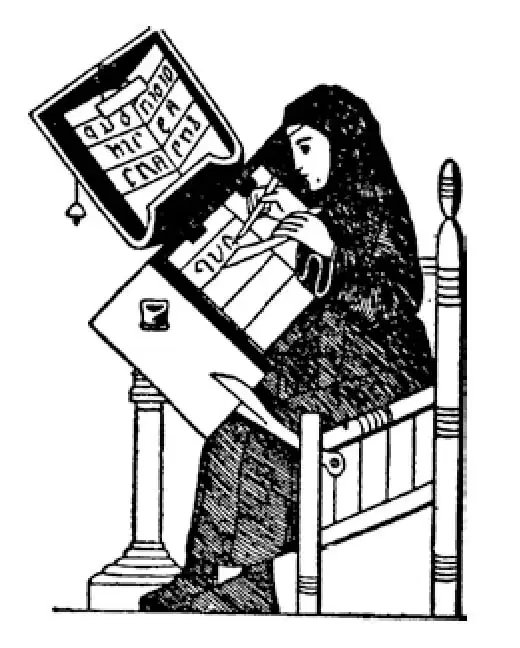

43
Being Good
为善

WHAT do you mean by being good ?
The Germans thought being good was being brave.
The Athenians thought that whatever was beautiful was good.
The Stoics thought that doing one's duty and suffering hardship calmly was being good.
The Epicureans thought the right kinds of pleasure were good.
The martyrs thought being good meant suffering and dying for Christ's sake.
Ever since the time of the martyrs, some Christians who wanted to be very, very good indeed, went off into the wilderness and lived by themselves. They wished to be far away from other people, so that they could spend all their time praying and thinking holy thoughts. This, they believed was being good.
One of the strangest of these men who wanted to get away from others was named St. Simeon Stylites. He built for himself a pillar or column fifty feet high, and on the top of it he lived with room only to sit but not to lie down. There on the top he lived for many years, day and night, winter and summer, while the sun shone on him and the rain rained on him, and he never came down at all. He could be reached only by a ladder, which his friends used to take him food. High up out of the world, he thought he could best lead a holy life. That was his idea of being good although we should think such a person simply crazy.
In the course of time, however, men and women who wanted to lead holy lives, instead of living alone as they had done at first, gathered in groups and built themselves homes. The men were called monks, the women nuns or virgins, and the houses where they lived were known as monasteries or abbeys. The head monk of an abbey was called an abbot, from the Aramaic word abba , which means father in the language that Jesus spoke. The abbot ruled over the other monks like a father over his children, giving them orders and punishing them when he thought they needed it. Abbesses were in charge of their nuns in the same way.
In the five hundreds there lived an Italian monk named Benedict. He believed very strongly that one must work if he was to be holy, that work was a necessary part of being holy. He thought, also, that monks should have no money of their own, for Christ had said in the Bible, “If thou wilt be perfect, go and sell that which thou hast, and give to the poor.” (Matthew 19:21） Benedict started an order for those people who would agree to three things:
The first thing they were to agree to was to have no money.
The second thing was not to marry.
The third thing was to obey the abbot or abbess.
Men and women who joined this order were called Benedictines.
Now, you might think there would have been hardly anyone who would promise for life three such things as to have no money, to obey the abbot— no matter what he told them to do—and never to marry. Nevertheless, there were a great many in every country of Europe who did become Benedictines.
Usually monks or nuns lived in little bare rooms like prison cells, and ate their very simple meals together at a single table in a room called the refectory. They sang praise at sunrise and sunset, and four times during the day besides; they even woke up at midnight to sing prayers. Singing praise was their main job, but not all they had to do. Work of every kind they were obliged to do, and they did it joyfully, whether the work was scrubbing floors or digging in the garden. People who had been rich and people who had been poor all followed the same rules.
Sometimes a monastery was situated in a barren or swampy spot on land that had been given the monks because it was not good or, even worse than no good, dangerously unhealthy. But the monks set to work and drained off the water, tilled the soil, and made the waste places bloom like the rose. They then raised vegetables for their table, fodder for their horses and cattle and sheep. Everything they ate or used or needed, they raised or made.

Monk copying a manuscript
抄写“手抄本”的修道士
They did not only the rougher handwork; they did fine handwork, too. Movable type had not been invented, and printing was not known in Europe at this time. Books had to be written by hand, and the monks and nuns who had reading and writing skills were the ones to do this job. They copied the old books in Latin and Greek. Sometimes one monk would slowly read the book to be copied, and several other monks at one time would copy what he dictated. In this way a number of copies would be made.
The pages of the books were not made of paper but of calfskin or sheepskin, called vellum, and this vellum was much stronger and lasted much longer than paper.
These old books which the monks wrote were called manuscripts , which means handwritten . Many of these may now be seen in museums and libraries. Some of these manuscripts have been beautifully handpainted with loving care and the initial letters and borders ornamented with designs of flowers and vines and birds and pictures in red and gold and other colors. If monks and nuns hadn't done this copying, many of the old books would have been lost and unknown to us.
The monks also kept diaries, writing down from day to day and year to year an account of the important things that happened. These old diaries, or chronicles, as they were called, tell us the history of the times. As there were then no newspapers, if these chronicles had not been written we should not know what went on at that time.
The monks were the best educated people of those days, and they taught others—both young and old—the things they themselves knew. The monasteries were also inns for travelers, for anyone who came and asked for lodging was received and given food and a place to sleep whether he had any money to pay or not.
Monks and nuns helped the poor and needy. The sick, too, came to monasteries to be treated and taken care of, so that a monastery was often something like a hospital, too. Many people who had received such help or attention made rich gifts to the monasteries, so they became very wealthy, although neither monks nor nuns could own so much as a spoon for themselves.
So you see monks and nuns were not merely holy; they were lights in an age when the world had grown dull and dangerous. Yes, they were lights, and there were other lights too shining in those years. You will read about them a little later in this book.
【中文阅读】
你认为什么才是“为善”?
日耳曼人认为“为善”就是勇敢无畏。
雅典人认为凡是美的就是善的。
斯多葛派认为履行自己的义务，能默默地承受苦难就是“为善”。
伊壁鸠鲁学说信奉者认为，适宜的快乐就是善。
殉道者认为，“为善”就意味着为基督吃苦受难乃至牺牲。
自从殉道者那个时代以来，有些想真心为善、刻苦修行的基督徒，就离家到荒无人烟的地方，独自一人生活。他们希望远离人群，就可以把全部时间用于祈祷和沉思上帝的启示。他们认为这才是“为善”。
在那些想离群索居的人中有个人最奇怪，他叫圣西门•斯泰莱特。他为自己建了一个50英尺高的柱子，即圆柱，他就住在柱子顶端，上面的空间仅够坐着，无法躺下来。他在那上面生活了很多年，度过了白天黑夜、春夏秋冬，无论骄阳暴晒还是大雨淋身，他都绝不下来。他的朋友们只有搭梯子才能到他那儿，给他提供食物。这样脱离尘世、高高在上，他认为就能最充分地过圣洁的生活。这就是他“为善”的观念，不过我们会觉得这样的人简直就是疯了。
终于，那些想要过圣洁生活的男男女女已经不再像最初那样选择离群索居了，而是组成各个群体并建造了各自的家园住所。这些男人叫“修道士”，这些女人叫 “修女”或“贞女”，他们居住的房子叫“隐修院”或“修道院”。修道院中领头的修道士叫做“修道院院长”，这个词源自阿拉姆语中的单词abba ，阿拉姆语是耶稣说的语言，这个词的意思是“父亲”。他管理其他所有的修道士，就像父亲管教他的孩子一样，给他们发指令，在他认为必要的时候还惩罚他们。女修道院院长也是这样管理她的修女。
在6世纪初，意大利有个修道士名叫本尼迪克特，他坚信，一个人想要过圣洁的生活，就必须工作，工作是圣洁生活中必不可少的。他还认为，修道士不应有私人财物，因为耶稣曾经在《圣经》里说过，“你若愿意做完全人，可去变卖你所有的，分给穷人”（马太福音19:21）。本尼迪克特创办了一个修道会，加入修道会的人必须遵守三条规定：
第一必须遵守的是不得拥有私人财物。
第二是不得结婚。
第三是要服从修道院院长。
参加此修道会的男女被称为“本笃会修士或修女”。
现在，你可能觉得很难有人会承诺一生遵守这三条规定：不得拥有私人财物，不管修道院院长要修士做什么都必须服从，还永远不能结婚。然而，在欧洲的每个国家都有很多人真的成了本笃会的修士或修女。
通常，修道士和修女都住在像单人牢房一样没有陈设的小屋里，在一间叫做食堂的房间里，他们围坐在仅有的一张桌子旁边，吃着粗茶淡饭。他们在日出和日落的时候要唱赞美诗，除此之外，一天还要唱四次；他们甚至还在半夜醒来唱祷文。唱赞美诗就是他们的主要工作，但这并不是他们必须做的全部工作。他们还要干各种各样的活，不管这活是擦洗地板还是在花园松土，他们都干得很开心。这些人不管以前是贫是富，全都遵守同样的教规。
有时候，修道院位于一个荒芜或潮湿的地方。就因为这个地方不好，甚至糟透了，还有害健康、危及生命，所以才把这个地方让给修道士。但是，修道士们开始认真整理这个地方，他们排去地里的水，耕作土地，让这荒凉之地充满生机，就像玫瑰一样绽放了。然后，他们种上自己吃的蔬菜和供马、牛、羊吃的饲料。他们吃、用及所需要的一切，全靠自己种植和生产。
修道士和修女不仅干粗活，他们还干细活。此时，活字还没发明，欧洲人还不知道印刷术，书籍不得不靠手抄。那些会读书写字的修道士和修女正是干这种细活的人。他们抄写那些用拉丁文和希腊文写的古书。有时候，一个修道士慢慢地朗读需要抄写的书，其他几个修道士同时抄下他朗读的内容，这样就可以同时抄写好几份了。
那时的书不是纸制的，而是用小牛皮或羊皮做的，叫犊皮纸或羊皮纸。这种皮纸比真正的纸要结实、耐用得多。
修道士抄写的这些古书叫“手抄本”，也就是“手写本”的意思，其中有很多现在还可以在博物馆和图书馆里看到。有些手抄本被悉心绘制得很美，首字母和页边都用花儿、藤蔓、鸟儿的图案做点缀，或用红色、金色和其他颜色画的画儿做装饰。如果没有这些修道士和修女做这样的抄写工作，那么很多古书就会失传，再也不为我们所知了。
修道士还写日记，他们日复一日、年复一年地记下所发生的重大事件。这些古老的日记，或者按照通常的说法叫编年史，告诉了我们那个时代的历史。由于那时候没有报纸，如果修道士没有写下这些编年史，我们现在就没法知道那时都发生了些什么事。
修道士都是那个时代受过最好教育的人，他们还把自己的知识教给其他人——无论是老人还是孩子。修道院还是旅行者的客栈，因为凡是去那里请求借宿的人，都会被收留，还有食物吃，有睡觉的地方，不管他有没有钱付账。
修道士和修女还帮助贫穷困苦的人。病人也会到修道院寻求医治和照顾，所以修道院又常常有点像医院。很多得到过修道院帮助和关心的人后来赠予修道院很多贵重的东西，所以，修道院变得非常富有，不过，修道士和修女连属于自己的一个汤匙都没有。
那么，你知道了，修道士和修女不仅仅是圣洁的，在一个世界变得昏暗和危险 的时代，他们就是一盏盏明灯。是的，他们是明灯。在那个时代，还有其他一些明灯在熠熠发光。关于他们，稍后也会在这本书里读到。
公元600年